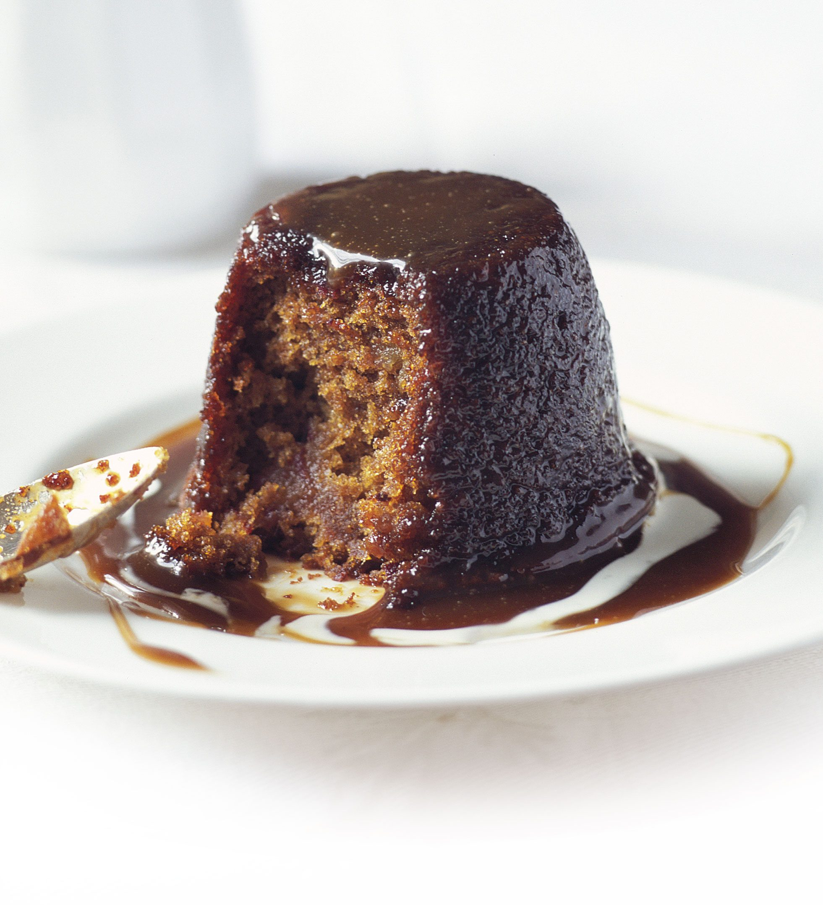

Pudding

Description
One of our most requested recipes.
Puddings don't get any better than this.
Ingredients
- 225g whole medjool dates
- 175ml boiling water
- 1 tsp vanilla extract
- 175g self-raising flour, plus extra for greasing
- 1 tsp bicarbonate of soda
- 2 eggs
- 85g butter, softened, plus extra for greasing
- 140g demerara sugar
- 2 tbsp black treacle
- 100ml milk
- cream or custard to serve (optional)
- 175g light muscovado sugar
- 50g butter, cut into pieces
- 225ml double cream
- 1 tbsp black treacle
Steps
- Stone and chop 225g medjool dates quite small, put them in a bowl, then pour over 175ml boiling water.
- Leave for about 30 mins until cool and well-soaked, then mash a bit with a fork. Stir in 1 tsp vanilla extract.
- Butter and flour seven mini pudding tins (each about 200ml/7fl oz) and sit them on a baking sheet. Heat oven to 180C/fan 160C/gas 4.
- While the dates are soaking, make the puddings. Mix 175g self-raising flour and 1 tsp bicarbonate of soda together and beat the 2 eggs in a separate bowl.
- Beat 85g softened butter and 140g demerara sugar together in a large bowl for a few mins until slightly creamy (the mixture will be grainy from the sugar). Add the eggs a little at a time, beating well between additions.
- Beat in 2 tbsp black treacle then, using a large metal spoon, gently fold in one-third of the flour and bicarbonate of soda mix, then half of the 100ml milk, being careful not to overbeat. Repeat until all the flour mix and all the milk is used.
- Stir the soaked dates into the pudding batter. The mix may look a little curdled at this point and will be like a soft, thick batter.
- Spoon it evenly between the tins and bake for 20-25 mins, until risen and firm.
- Meanwhile, put the 175g light muscovado sugar and 50g butter pieces for the sauce in a medium saucepan with half the 225ml double cream.
- Bring to the boil over a medium heat, stirring all the time, until the sugar has completely dissolved.
- Stir in 1 tbsp black treacle, turn up the heat slightly and let the mixture bubble away for 2-3 mins until it is a rich toffee colour, stirring occasionally to make sure it doesn’t burn. Take the pan off the heat and beat in the rest of the double cream.
- Remove the puddings from the oven. Leave in the tins for a few mins, then loosen them well from the sides of the tins with a small palette knife before turning them out.
- You can serve them now with the sauce drizzled over, but they’ll be even stickier if left for a day or two coated in the sauce. To do this, pour about half the sauce into one or two ovenproof serving dishes.
- Sit the upturned puddings on the sauce, then pour the rest of the sauce over them. Cover with a loose tent of foil so that the sauce doesn’t smudge (no need to chill).
- When ready to serve, heat oven to 180C/fan 160C/gas 4. Warm the puddings through, still covered, for 15-20 mins or until the sauce is bubbling. Serve them on their own, or with cream or custard.
Back to main page